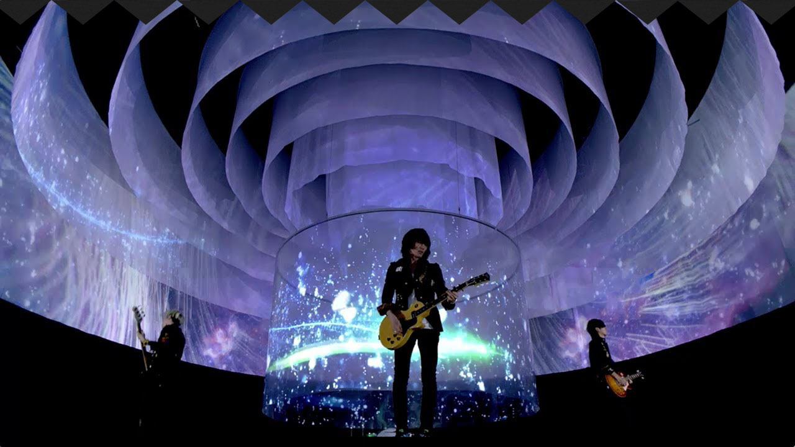

BUMP OF CHICKEN

1994年に結成された、日本のロックバンド[2]。略称としては『バンプ』『BOC』が用いられる。 トイズファクトリー所属。バンド名は『弱者の反撃』という意味を持って名付けられた。
Discography
TOUR DOCUMENTARY LIVE Blu-ray Disc BUMP OF CHICKEN「WILLPOLIS 2014」
RAY
パレード
公式サイトへ